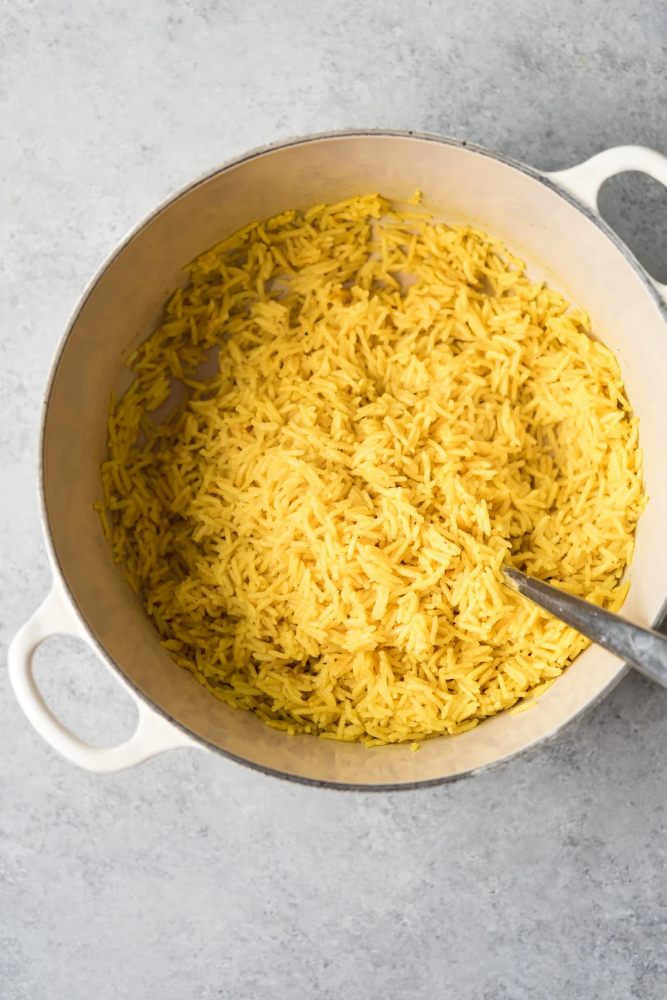

Recipe for Turmeric Rice

Home
Description
Ingredients
Steps
- Clean the rice by filling it in a pan with water, then pouring out the water
- Fil the rice with water again
- Start heating up the rice on the stove
- Add the turmeric and mix it with the water
- Wait for water to start boiling, then turn off the stove
- Move pan away from stove once the rice absorbs the water